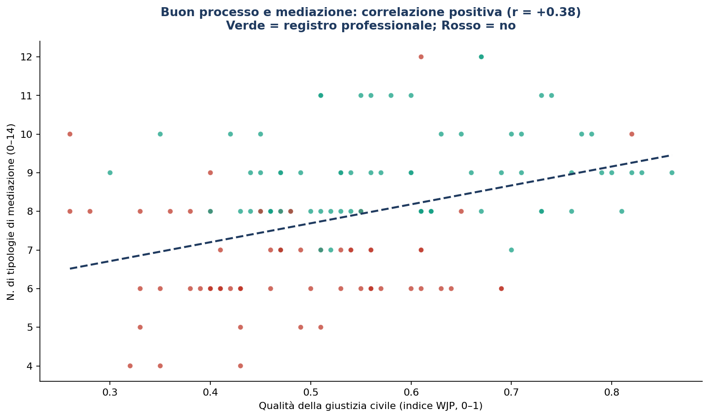
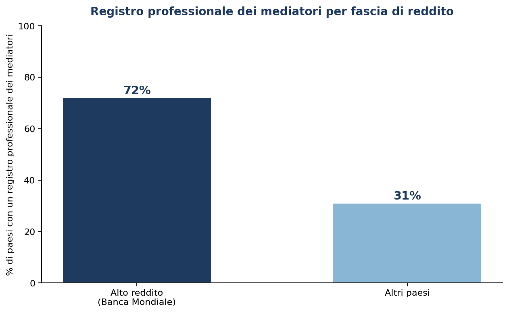
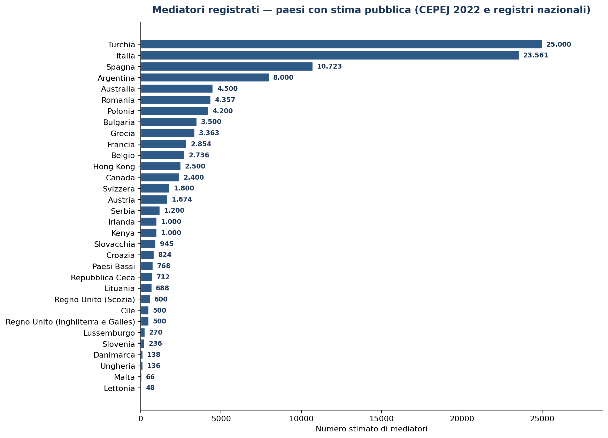

Diritto della mediazione
Fai una domanda su qualunque Paese e qualunque forma di mediazione — civile, commerciale, familiare, penale, del lavoro: la risposta attinge ai 443 atti italiani e alla legislazione dei 195 ordinamenti del mondo, da scaricare in Word.
Questo motore attinge alla banca dati normativa dell’archivio — dal d.lgs. 28/2010 e la riforma Cartabia alle direttive europee, fino alla legislazione sulla mediazione di tutti i 195 ordinamenti del mondo (per es. «quali sono i provvedimenti in materia di mediazione in Bulgaria?») — e compone una trattazione unitaria, scaricabile in Word. In coda, gli atti utilizzati.
Per ogni paese: legge di riferimento, stato, obbligatorietà, scheda sintetica e link alla fonte ufficiale e al testo integrale. Con ricerca e filtri.
📜 Schede per paese aggiornate al 2026 — legislazione vigente, novità e riforme →
Le 195 schede specialistiche con le novità 2024–2026 e le riforme in discussione, fonti in lingua nazionale e commenti.
🇮🇹 Provvedimenti stranieri 2024–2026 — testo in italiano →Il contenuto in italiano di ogni riforma straniera recente (approvata o in discussione), come base di lavoro attendibile.
📚 La mediazione nel mondo — quadro comparato dei 195 ordinamenti (tavole e classifica)
La mediazione nel mondo: una mappa comparata di 195 ordinamenti
Un quadro comparato dei 195 ordinamenti del pianeta: quali modelli di mediazione esistono, dentro quale cornice processuale operano, quante sono le cause e le mediazioni, e dove si colloca l’Italia.
Premessa
Ho provato a fare una cosa che, per quel che mi risulta, in italiano non era ancora stata fatta, almeno a mia conoscenza: mettere in fila, uno accanto all'altro, 195 ordinamenti nazionali e chiedere a ciascuno la stessa cosa. Non «hai una legge sulla mediazione?» — domanda troppo grossolana, che appiattisce sistemi lontanissimi tra loro — ma una serie di domande più precise, una per ciascuna delle forme che la composizione amichevole dei conflitti assume nel diritto vivente. Ne sono nate una tavola comparativa e una seconda tavola sui numeri e sui registri dei mediatori, che pubblico insieme a questo commento.
Le voci della prima tavola sono quattordici: la mediazione obbligatoria preventiva (la nostra condizione di procedibilità); la preventiva facoltativa; la mediazione disposta dal giudice (facoltativa od obbligatoria); la contrattuale; le mediazioni per materia — del lavoro e familiare (ciascuna distinta tra obbligatoria e facoltativa), la penale, la del consumo, l'amministrativa e la sociale o comunitaria; e infine il giudice mediatore, cioè gli ordinamenti in cui è un magistrato a condurre in prima persona la conciliazione.
1. Che cosa dicono i numeri globali
Il primo dato è quasi ovvio, ma va detto: la mediazione preventiva facoltativa e quella contrattuale esistono ovunque (195 su 195). La mediazione, prima di essere legge, è un gesto.
La mediazione disposta dal giudice copre gran parte del pianeta: 174 ordinamenti conoscono almeno il rinvio facoltativo, e ben 90 conoscono forme in cui è il giudice a imporre il passaggio conciliativo. La condizione di procedibilità preventiva resta minoritaria (35 paesi, comprese Spagna, Polonia e Moldova che l’hanno introdotta nel 2025). Nel lavoro, la fase conciliativa è imposta in 46 ordinamenti, facoltativa in altri 101. Nella famiglia, la mediazione è facoltativa in 151 paesi ma obbligatoria in 17. La mediazione penale arriva a 64 paesi: non più eccezione europea, ma tendenza globale.
La mediazione del consumo è presente in 103 paesi. L'amministrativa in senso tecnico è rarissima: appena 9 ordinamenti. La sociale o comunitaria tocca 190 paesi: è la forma più antica e universale.
Tavola 1 — Tipologie di mediazione: diffusione nei 195 ordinamenti
Due tipologie sono universali (contrattuale e preventiva facoltativa: 195/195). Il baricentro si sposta verso il giudice (174 col rinvio facoltativo, 90 con forme obbligatorie). La familiare è quasi ovunque (168), ma imposta solo in 17 paesi. Mediazione del consumo: 103 paesi; amministrativa in senso stretto: 9; sociale/comunitaria: 190.
| Tipologia | N. paesi | % su 195 |
|---|---|---|
| A · Obbligatoria preventiva | 32 | 16% |
| B · Preventiva facoltativa | 195 | 100% |
| C · Giudice facoltativa | 174 | 89% |
| D · Giudice obbligatoria | 90 | 46% |
| E · Contrattuale | 195 | 100% |
| F · Lavoro obbligatoria | 46 | 24% |
| G · Lavoro facoltativa | 101 | 52% |
| H · Penale | 64 | 33% |
| I · Familiare obbligatoria | 17 | 9% |
| J · Familiare facoltativa | 151 | 77% |
| K · Giudice mediatore | 39 | 20% |
| L · Del consumo | 103 | 53% |
| M · Amministrativa | 9 | 5% |
| N · Sociale/comunitaria | 190 | 97% |
Tavola 2 — La cornice processuale
Dove c'è un codice, la mediazione vi si innesta come istituto processuale; nei sistemi di common law, vive nel case management del giudice.
| Categoria | N. paesi |
|---|---|
| Con Codice di procedura civile codificato | 140 |
| Common law senza codice (Rules of Court) | 55 |
| Totale | 195 |
2. Il giudice mediatore
Merita attenzione la voce dei 39 ordinamenti in cui il giudice media. Il Güterichter tedesco, il giudice del chōtei giapponese, il rettsmekling norvegese e, seppure in misura diversa, la nostra proposta conciliativa ex art. 185-bis c.p.c. dimostrano che la separazione tra chi giudica e chi concilia non è così netta. In molte culture il buon giudice è, prima di tutto, colui che sa evitare la sentenza.
3. Quante cause, quante mediazioni nel mondo
Gli ordini di grandezza rivelano una geografia rovesciata: nel mondo sono pendenti oltre un miliardo di procedimenti civili, mentre le mediazioni si contano a decine di milioni ma concentrate dove sono comunitarie. La Cina compone circa 20 milioni di dispute attraverso la mediazione; l'India con i Lok Adalat smaltisce decine di milioni di casi; l'Europa, che iscrive a ruolo oltre 50 milioni di cause l'anno (CEPEJ), vi celebra mediazioni per poche centinaia di migliaia, sotto l'1%.
Tavola 3 — Cause civili e mediazioni a confronto (stime, milioni/anno)
Dove la mediazione è comunitaria rivaleggia con il giudizio; dove è professionale e volontaria resta un rivolo accanto al fiume del processo.
| Area | Cause civili/anno | Mediazioni/anno | Note |
|---|---|---|---|
| Brasile | ~84 mln a ruolo; ~39 mln nuove/anno | ~2 mln (CEJUSC) | CNJ, Justiça em Números |
| UE / Consiglio d'Europa | oltre 50 mln a ruolo/anno | poche centinaia di migliaia | CEPEJ; mediazione < 1% |
| Cina | ~45 mln civili 1° grado/anno | ~20+ mln | popolare + pre-contenziosa (~40%) |
| India | decine di mln/anno | decine di mln | Lok Adalat (conciliazione di massa) |
| Stati Uniti | ~15–20 mln/anno | n.d. | court-annexed statale, non censita |
| Mondo | oltre 1 miliardo pendenti | decine di mln | dominato da Brasile, UE, Cina, India |
Tavola 15 — Dove la pendenza giudiziaria è più forte e dove è più debole
La pendenza è più forte dove il processo è l'unica porta di accesso alla giustizia; più debole dove operano filtri manageriali, digitali o comunitari. Fonti: CNJ, NJDG, CEPEJ, EU Justice Scoreboard 2026, WJP 2025, mediareinformati.it.
| Fascia | Paese / Area | Indicatore di pendenza |
|---|---|---|
| Più forte | Brasile | ~84 mln di processi pendenti, ~39 mln di nuove cause/anno (CNJ) |
| Più forte | India | ~44–50 mln di cause pendenti (NJDG); i Lok Adalat come valvola di sfogo |
| Più forte | Bangladesh | ~4 mln di cause pendenti |
| Più forte | Pakistan | ~2,4 mln di cause pendenti |
| Più forte | Nigeria · Egitto · Filippine | arretrati cronici; dati ufficiali frammentari |
| Più forte | Italia · Grecia | le code d'Europa per durata: terzo grado civile italiano a 2.217 giorni, massimo UE (Scoreboard 2026) |
| Più debole | Danimarca · Norvegia | vertice WJP per giustizia civile (0,86) |
| Più debole | Paesi Bassi · Germania · Svezia | durate contenute e stock di pendenze stabile |
| Più debole | Singapore | tempi brevissimi, gestione manageriale del ruolo |
| Più debole | Estonia · Lituania | disposition time civile più basso dell'UE (~100–130 giorni) |
| Più debole | Giappone · Corea del Sud | contenzioso pro capite basso, definizioni rapide |
| Casi a parte | Cina | ~45 mln di cause civili/anno, ma pendenza contenuta da ~20 mln di mediazioni popolari e pre-contenziose |
| Casi a parte | Ruanda | gli abunzi comunitari hanno ridotto dell'85% i casi civili nei tribunali |
| Mondo | Totale | oltre 1 miliardo di procedimenti civili pendenti, dominati da Brasile, India, UE e Cina |
La tavola acquista tutto il suo peso se letta in chiave demografica. I paesi della fascia ad alta pendenza — Brasile, India, Bangladesh, Pakistan, Nigeria, Egitto, Filippine, Italia e Grecia — sommano circa 2,65 miliardi di abitanti, un terzo dell'umanità; il club della giustizia rapida — le nazioni nordiche, Paesi Bassi, Germania, Singapore, i Baltici, Giappone e Corea — ne conta appena 310 milioni, meno del 4%. Se ai primi si aggiungono i casi a parte di Cina e Ruanda, dove la pressione del contenzioso è assorbita dalla mediazione di massa, si arriva a oltre 4 miliardi di persone: metà del pianeta vive sotto giurisdizioni sovraccariche o rette da conciliazione comunitaria, mentre la giustizia civile efficiente in senso occidentale è il privilegio statistico di una persona su venticinque. La conclusione è difficilmente eludibile: alla scala del miliardo di abitanti nessun sistema giudiziario ordinario regge il carico, e l'unico filtro che si è dimostrato scalabile è quello amichevole — i Lok Adalat indiani, la mediazione popolare cinese, gli abunzi ruandesi. Popolazione: stime ONU 2025 (mondo ~8,2 miliardi).
4. L'Europa: l'Italia in testa per numero, in coda per incentivi
Il database CEPEJ (dato 2022) consegna un primato italiano: 23.561 mediatori, primo in valore assoluto. Eppure, l'EU Justice Scoreboard 2026 colloca l'Italia solo 18ª su 26 per incentivi all'ADR. Il volume nasce dall'obbligo (condizione di procedibilità, mediazione demandata), non dal benessere o dalla cultura.
Tavola 4 — UE: mediatori, densità e incentivi all'ADR
La densità (per 100.000 ab.) ridimensiona il primato assoluto: Lussemburgo (40,86) e Italia (40,04) guidano, ma piccoli paesi come la Lituania mostrano forte incentivazione pur con numeri contenuti. NAP = nessun sistema di accreditamento.
| Paese | Mediatori (2022) | per 100.000 ab. | ADR 2026 |
|---|---|---|---|
| Italia | 23.561 | 40,04 | 18º |
| Spagna | 10.723 | 22,31 | 3º |
| Romania | 4.357 | 22,87 | 13º |
| Polonia | 4.200 | 11,12 | 6º |
| Grecia | 3.363 | 31,49 | 14º |
| Francia | 2.854 | 4,19 | 5º |
| Belgio | 2.736 | 23,39 | 10º |
| Austria | 1.674 | 18,39 | 16º |
| Slovacchia | 945 | 17,41 | 23º |
| Croazia | 824 | 21,40 | n.d. |
| Paesi Bassi | 768 | 4,31 | 9º |
| Cechia | 712 | 6,56 | 19º |
| Lituania | 688 | 24,08 | 4º |
| Lussemburgo | 270 | 40,86 | 22º |
| Slovenia | 236 | 11,15 | 17º |
| Danimarca | 138 | 2,33 | 1º |
| Ungheria | 136 | 1,42 | 7º |
| Malta | 66 | 12,69 | 24º |
| Lettonia | 48 | 2,55 | 11º |
| Germania | NAP | — | 2º |
| Finlandia | NAP | — | 26º |
| Estonia | NAP | — | 15º |
| Svezia | NAP | — | 20º |
Tavola 5 — UE: mediazioni all'anno e tasso di successo
I tassi di successo variano enormemente col metodo di conteggio: dall'92-98% di Inghilterra e Grecia (misurato sui casi mediati) al ~10% polacco (misurato sulle disposte dal giudice). Confrontare i tassi senza conoscere il denominatore è fuorviante.
| Paese | Mediazioni/anno | Tasso di successo | Fonte/anno |
|---|---|---|---|
| Italia | ~178.182 (2023) | adesione ~46%; accordo ~28% | Min. Giustizia, 2023 |
| Paesi Bassi | ~51.000 (2019) | 72–80% | Panteia/Raad, 2019–23 |
| Francia | ~43.350 (2021) | 75,2% (giudiziarie) | Min. Justice, 2021 |
| Inghilterra e Galles | ~17.000 (2022) | 92% | CEDR Audit, 2022 |
| Polonia | 9.417 disposte (2022) | ~10–11% | Min. Giustizia/IWS, 2022 |
| Slovenia | ~4.711 (court-annexed) | ~50% | Stat. giud., 2019–23 |
| Lituania | 3.183 familiari (2022) | 54% | Min. Giustizia/STRATA, 2022 |
| Finlandia | ~2.250 (2022) | 70–80% | Min. Giustizia, 2022 |
| Grecia | 685 obbl.+927 volont. (2022) | 96–98% | Central Med. Committee, 2022 |
| Rep. Ceca | ~1.700 prime riunioni (2024) | 57–68% | Min. Giustizia, 2024 |
| Danimarca | 516 (2022) | 62,6% | Retsplejerådet, 2022 |
| Croazia | 583 (2023) | 40–52% | Maganić/Kovač, 2023 |
| Lettonia | 389 (2021) | ~70% (fam.) | Min. Giustizia, 2018–21 |
| Estonia | 976 familiari (2024) | ~35% | Social Insurance Board, 2024 |
Tavola 6 — UE: chi tiene il registro dei mediatori
Il modello prevalente è il registro statale (ministeriale). La Germania non ha alcun registro nazionale: il titolo non è protetto.
| Paese | Registro tenuto da |
|---|---|
| Austria | Stato |
| Belgio | Stato |
| Bulgaria | Stato |
| Cipro | Stato |
| Croazia | Stato |
| Danimarca | Corte |
| Estonia | Ordini professionali |
| Finlandia | Stato |
| Francia | Corte (C. d'appello) |
| Germania | Nessun registro nazionale |
| Grecia | Stato |
| Inghilterra e Galles | Ente |
| Irlanda | Ente |
| Irlanda del Nord | Ente |
| Italia | Stato |
| Lettonia | Stato |
| Lituania | Stato |
| Lussemburgo | Stato |
| Malta | Stato |
| Paesi Bassi | Ente |
| Polonia | Corte |
| Portogallo | Stato |
| Repubblica Ceca | Stato |
| Romania | Stato |
| Scozia | Ente |
| Slovacchia | Stato |
| Slovenia | Corte |
| Spagna | Stato |
| Svezia | Corte |
| Ungheria | Stato / Corte |
5. L'Italia: un'infrastruttura matura, una geografia disomogenea
Dal marzo 2011 al dicembre 2025 sono state iscritte circa 2.234.943 mediazioni civili e commerciali. La serie disegna la storia dell'istituto: l'avvio del 2011, l'esplosione del 2012, il crollo del 2013 (C. cost. 272/2012), il massimo storico del 2015 (196.247), il minimo pandemico del 2020, il nuovo slancio del 2023 con la Riforma Cartabia e la stabilizzazione a 162–163 mila iscrizioni annue nel biennio 2024–2025.
La percentuale di comparizione cresce da 40,5% a oltre il 54%, mentre il tasso di accordo sui comparsi passa da 24,2% a valori intorno al 30–33%: la quota di procedimenti definiti con accordo è quasi raddoppiata rispetto agli anni iniziali.
Tavola 7 — Italia: quindici anni di flussi (iscrizioni 2011–2025)
La domanda di mediazione è matura e stabile ma non in decollo: resiste agli shock (2013, 2020) e reagisce agli interventi normativi. Il 2012 include ~44.700 iscrizioni RC auto, poi esclusa. Fonte: DGSTAT.
| Anno | Iscrizioni | Note |
|---|---|---|
| 2011 | 60.810 | Avvio rilevazione (21 marzo) |
| 2012 | 154.879 | Inclusa ~44.700 RC auto (poi esclusa) |
| 2013 | 41.604 | Obbligatorietà sospesa (C. cost. 272/2012) |
| 2014 | 179.587 | Reintroduzione obbligo (d.l. 69/2013) |
| 2015 | 196.247 | Massimo storico |
| 2016 | 183.977 | — |
| 2017 | 166.989 | — |
| 2018 | 151.923 | — |
| 2019 | 147.691 | — |
| 2020 | 125.754 | Emergenza sanitaria (-15%) |
| 2021 | 166.511 | Recupero post-pandemia (+32%) |
| 2022 | 155.122 | — |
| 2023 | 178.182 | Riforma Cartabia dal 30/06 (+15%) |
| 2024 | 162.194 | Stima (-9%) |
| 2025 | 163.473 | Stima (+1%) |
Tavola 8 — Italia: comparizione, accordi e durata (2014–2025)
La quota di procedimenti chiusi con accordo è quasi raddoppiata (dal 9-10% del 2014 al 17-18% del 2024-2025). La durata media cresce per la complessità crescente delle liti, ma resta circa un quinto dei tempi del primo grado civile ordinario.
| Anno | Comparso % | Accordo % | Accordo > 1º incontro % | Durata media (gg) |
|---|---|---|---|---|
| 2014 | 40,5% | 24,2% | 47,0% | 83 |
| 2015 | 44,5% | 22,6% | 43,5% | 103 |
| 2016 | 46,8% | 23,7% | 43,6% | 115 |
| 2017 | 48,4% | 25,5% | 43,0% | 129 |
| 2018 | 50,3% | 27,3% | 44,8% | 142 |
| 2019 | 49,2% | 28,6% | 46,3% | 143 |
| 2020 | 47,8% | 28,7% | 46,7% | 175 |
| 2021 | 50,0% | 27,3% | 45,8% | 175 |
| 2022 | 51,8% | 28,9% | 47,4% | 186 |
| 2023 | 52,5% | 30,4% | 50,1% | 179 |
| 2024 | 55,4% | 32,8% | 54,0% | — |
| 2025 | 54,8% | 30,6% | 53,1% | — |
Tavola 9 — Italia: i registri ministeriali della mediazione
Sopravvive circa il 43% degli organismi mai iscritti (493 su 1.153) e il 42% degli enti di formazione (200 su 481). * Le liste di mediatori e formatori non riportano lo stato di cancellazione. Fonte: Ministero della Giustizia.
| Registro | Iscritti totali | Attivi | Cancellati/sospesi |
|---|---|---|---|
| Organismi di mediazione | 1.153 | 493 | 660 |
| Enti di formazione | 481 | 200 | 281 |
| Mediatori | 22.439 | 22.439* | — |
| Formatori | 1.406 | 1.406* | — |
Tavola 10 — Italia: organismi attivi per regione (sede legale)
Lazio (76), Campania (75), Sicilia (60) e Lombardia (54) raccolgono da soli oltre metà degli organismi attivi, segno di una geografia dell'offerta assai disomogenea.
| Regione | Organismi attivi |
|---|---|
| Lazio | 76 |
| Campania | 75 |
| Sicilia | 60 |
| Lombardia | 54 |
| Toscana | 29 |
| Emilia-Romagna | 29 |
| Puglia | 24 |
| Veneto | 22 |
| Calabria | 21 |
| Piemonte | 18 |
| Abruzzo | 16 |
| Marche | 13 |
| Liguria | 11 |
| Sardegna | 10 |
| Basilicata | 8 |
| Umbria | 7 |
| Friuli-Venezia Giulia | 7 |
| Trentino-Alto Adige | 6 |
| Molise | 2 |
| Valle d'Aosta | 2 |
6. La tesi alla prova: registro, reddito e qualità della giustizia
Tra i paesi nel quartile più alto per qualità della giustizia civile (WJP), l'82% ha un registro professionale (media 8,8 tipologie su 14); in quello più basso, solo il 15% (media 6,8). Per reddito: 72% contro 31%. Ma la ricchezza non spiega il numero dei mediatori: nell'UE la correlazione tra qualità della giustizia e mediatori per abitante è nulla/negativa (r = −0,10).

Come leggere la nuvola di punti. Ogni punto è un paese; l'ascissa misura la qualità della giustizia civile (WJP, da 0,26 a 0,86 nel campione), l'ordinata conta le tipologie di mediazione presenti sulle undici colonne discriminanti della tavola comparativa (escluse le tre quasi universali). La retta tratteggiata sale da circa 5,3 a circa 7,2 tipologie: nei paesi con il processo migliore l'offerta di mediazione è mediamente più ricca di quasi due forme. Ma r = +0,33 è una relazione moderata, e il dato più eloquente è il colore: i punti rossi (nessun registro professionale) si addensano in basso a sinistra, i verdi in alto a destra — il registro separa le due popolazioni più di quanto faccia la retta.
Le eccezioni confermano la lettura. I rossi ad alto punteggio normativo ma bassa qualità del processo documentano l'inflazione legislativa: molte forme di mediazione scritte sulla carta, nessuna infrastruttura professionale che le sostenga. I pochi rossi in alto a destra sono i sistemi di common law che non hanno bisogno del registro statale perché la qualità è governata da standard privati di accreditamento. Resta l'avvertenza di metodo: una correlazione non è una causa — il grafico non dimostra che la mediazione migliori il processo, ma che i due crescono insieme; ed è coerente con l'altro dato di questa sezione, la correlazione nulla (r = −0,10) tra volume dei mediatori e qualità della giustizia. Le leggi si copiano, i registri si costruiscono, la qualità si coltiva.

Tavola 11 — La tesi alla prova: sintesi degli indicatori
Il volume di mediatori nasce dall'obbligo normativo, non dal PIL. Correlazioni: WJP–tipologie r=+0,38; WJP–registro r=+0,41; UE: WJP–mediatori/100.000 ab. r=−0,10.
| Gruppo | % con registro professionale | Media tipologie (0-14) |
|---|---|---|
| Quartile ALTO — giustizia civile (WJP) | 82% | 8,8 |
| Quartile BASSO — giustizia civile (WJP) | 15% | 6,8 |
| Paesi ad ALTO reddito (Banca Mondiale) | 72% | 8,5 |
| Altri paesi | 31% | 6,6 |
Tavola 16 — Tipologie previste e pendenza giudiziaria: un controtest
Punteggio tipologico medio (Appendice) dei gruppi della Tavola 15: la ricchezza del catalogo normativo non distingue i sistemi congestionati da quelli rapidi. Fonte: elaborazione su mediareinformati.it.
| Gruppo (Tavola 15) | Tipologie medie (0–14) | Esempi |
|---|---|---|
| Pendenza più forte | 9,2 | Brasile 11, Italia 11, Grecia 11, India 10, Filippine 9 |
| Pendenza più debole | 9,2 | Norvegia 11, Germania 10, Danimarca 9, Giappone 8, Singapore 8 |
| Grandi deflattori | 8–9 | Cina 9, Ruanda 8 |
Il controtest chiude il cerchio della tesi. Se si incrocia la classifica dell'Appendice con le fasce di pendenza della Tavola 15, i paesi più congestionati del pianeta e i più rapidi mostrano esattamente lo stesso punteggio tipologico medio: 9,2 su 14. In cima alla classifica delle forme di mediazione stanno Brasile, Italia e Grecia — cioè i regni dell'arretrato — mentre Singapore e Giappone, tra i sistemi più veloci, si fermano a otto; e i due grandi deflattori, Cina e Ruanda, non superano quota nove. Il numero di tipologie previste dalla legge non predice né la litigiosità né la deflazione.
La spiegazione è duplice. La litigiosità dipende da fattori di domanda — demografia, economia, cultura giuridica, costo di accesso al giudice — sui quali il catalogo normativo non incide. La deflazione dipende dal tasso di uso effettivo, non dall'ampiezza del menù: il Brasile con undici tipologie concilia il 10% dei processi e somma 84 milioni di pendenze; il Ruanda con otto ne taglia l'85%, perché una sola forma — quella comunitaria obbligatoria — è usata da tutti. Vale anzi il sospetto inverso: molte tipologie sono spesso il sintomo, non la cura — il legislatore moltiplica le forme di mediazione proprio dove il processo annega. Una tipologia usata deflaziona più di dieci tipologie scritte: ciò che discrimina davvero restano i tre pilastri — registro serio, incentivi conosciuti, cornice processuale che spinga verso il tavolo.
7. Quanti sono i mediatori nel mondo
In circa novanta ordinamenti esiste un registro pubblico o un'autorità competente. Fuori dall'UE, la Turchia guida con oltre 30.000 mediatori (Arabulucular Sicili), seguita dall'Italia (23.561 CEPEJ 2022) e dalla Romania (~9.000, Tabloul mediatorilor). L'Argentina ne conta circa 8.000 nel Registro Nacional de Mediación, l'Australia 4.500 accreditati NMAS.

8. L'Italia nel World Justice Project (2015–2025)
I meccanismi ADR (indicatore 7.7) sono stabilmente il punto di forza della giustizia civile italiana — picco 0,727 nel 2022 — sempre ben sopra il fattore civile complessivo. Il tallone d'Achille è l'assenza di ritardi irragionevoli (7.5), inchiodata tra 0,30 e 0,35: sono i tempi, non la mediazione, a trascinare in basso la giustizia civile italiana.
Tavola 12 — Italia nel World Justice Project (2015–2025)
I meccanismi ADR (7.7) sono il punto di forza della giustizia civile italiana, con picco a 0,727 nel 2022. Il deficit strutturale è l'indicatore 7.5 «nessun ritardo irragionevole»: fermo tra 0,30 e 0,35. Fonte: World Justice Project, scala 0-1.
| Edizione | Rule of Law | Fattore 7 — Giustizia civile | 7.7 — Meccanismi ADR |
|---|---|---|---|
| 2015 | 0,653 | 0,586 | 0,694 |
| 2016 | 0,650 | 0,578 | 0,661 |
| 2017-18 | 0,652 | 0,564 | 0,686 |
| 2019 | 0,654 | 0,560 | 0,689 |
| 2020 | 0,658 | 0,563 | 0,687 |
| 2021 | 0,659 | 0,562 | 0,702 |
| 2022 | 0,666 | 0,579 | 0,727 |
| 2023 | 0,666 | 0,578 | 0,719 |
| 2024 | 0,660 | 0,570 | 0,704 |
| 2025 | 0,657 | 0,563 | 0,693 |
Tavola 13 — World Justice Project: prime 30 posizioni (giustizia civile 2025)
| Pos. | Paese | Indice 2025 |
|---|---|---|
| 1 | Denmark | 0,86 |
| 2 | Norway | 0,86 |
| 3 | Netherlands | 0,82 |
| 4 | Germany | 0,82 |
| 5 | Sweden | 0,83 |
| 6 | Singapore | 0,81 |
| 7 | Finland | 0,80 |
| 8 | Estonia | 0,79 |
| 9 | New Zealand | 0,79 |
| 10 | Lithuania | 0,77 |
| 11 | Japan | 0,76 |
| 12 | Luxembourg | 0,78 |
| 13 | Korea, Rep. | 0,76 |
| 14 | Austria | 0,73 |
| 15 | Australia | 0,74 |
| 16 | Belgium | 0,73 |
| 17 | Hong Kong SAR | 0,70 |
| 18 | Ireland | 0,73 |
| 19 | Uruguay | 0,71 |
| 20 | United Kingdom | 0,70 |
| 21 | St. Kitts and Nevis | 0,69 |
| 22 | Canada | 0,67 |
| 22 | Czechia | 0,69 |
| 22 | France | 0,67 |
| 25 | Latvia | 0,71 |
| 26 | Antigua and Barbuda | 0,69 |
| 27 | Portugal | 0,63 |
| 28 | United Arab Emirates | 0,67 |
| 29 | St. Lucia | 0,64 |
| 30 | Spain | 0,65 |
9. La classifica
In vetta, con dodici servizi su quattordici, tre soli ordinamenti — Canada, Francia e Stati Uniti — proprio perché aggiungono al resto anche la rara mediazione amministrativa. Subito sotto, a undici, un gruppo folto e di tradizioni diversissime (Argentina, Australia, Belgio, Brasile, Cile, Grecia, Italia, Norvegia, Nuova Zelanda, Thailandia). In coda, con appena tre servizi, gli Stati chiusi o in dissoluzione: Corea del Nord, Eritrea, Somalia, Sud Sudan. La classifica integrale dei 195 ordinamenti è nell'Appendice.
La classifica non premia il volume delle leggi ma la varietà dei modi in cui una società sceglie di comporre i propri conflitti.
10. La cornice internazionale: da Bruxelles a Singapore
La mappa dei 195 ordinamenti non fluttua nel vuoto: sopra le legislazioni nazionali si è formata, nell'ultimo ventennio, una cornice sovranazionale che spiega molte delle convergenze registrate nelle tavole. In Europa il punto di partenza resta la direttiva 2008/52/CE, che disciplina la mediazione civile e commerciale nelle controversie transfrontaliere ma che la maggioranza degli Stati membri — l'Italia per prima, con il d.lgs. 28/2010 — ha esteso alle liti interne. La sua valutazione ufficiale (COM(2016) 542) è insieme un riconoscimento e una condanna: la direttiva ha portato «valore aggiunto», ma in molti Stati membri la mediazione è utilizzata in meno dell'1% dei casi civili. Da allora Bruxelles non l'ha più toccata: resta l'unico strumento orizzontale dell'Unione sulla mediazione.
Il legislatore europeo si è invece mosso sul fronte del consumo, con esiti in chiaroscuro. Da un lato la direttiva (UE) 2025/2647, in vigore dal 19 gennaio 2026 (applicazione dal 20 settembre 2028), amplia l'ADR dei consumatori oltre il contratto e obbliga il professionista a rispondere all'organismo entro venti giorni lavorativi. Dall'altro il regolamento (UE) 2024/3228 ha decretato la chiusura della piattaforma europea ODR, spenta definitivamente il 20 luglio 2025 dopo un decennio in cui aveva trasmesso agli organismi ADR circa 200 casi l'anno, il 2% dei reclami ricevuti: un fallimento istruttivo, su cui tornerò nella sezione 12.
Sul piano globale la novità del decennio è la Convenzione di Singapore sulla mediazione (New York, 20 dicembre 2018), che fa per gli accordi conciliativi ciò che la Convenzione di New York del 1958 fece per i lodi arbitrali: li rende eseguibili all'estero senza exequatur nello Stato d'origine. Aperta alla firma il 7 agosto 2019 con 46 firmatari il primo giorno — un record per una convenzione commerciale ONU — è in vigore dal 12 settembre 2020. A luglio 2026 conta 60 firmatari e 23 parti (Israele parte dall’8/7/2025): tra le ratifiche recenti spiccano il Giappone (efficacia dal 1° aprile 2024, con riserva di opt-in), il Brasile (in vigore dal 6 febbraio 2026, prima grande economia latinoamericana), l'Oman e la Colombia (2026). Il Regno Unito ha firmato nel maggio 2023 e ha chiuso nell'ottobre 2025 la consultazione pubblica sull'attuazione; Stati Uniti, Cina e India hanno firmato senza ratificare; l'Unione europea non ha nemmeno firmato, prigioniera dell'irrisolta questione della competenza. L'Italia, ad oggi, resta alla finestra.
Completano la cornice la legge modello UNCITRAL 2018 sulla mediazione commerciale internazionale — legislazione basata su di essa o sulla versione 2002 risulta adottata in 33 Stati per 46 giurisdizioni, inclusi i 17 Stati OHADA con l'Acte uniforme sulla mediazione del 2017 — e la soft law del Consiglio d'Europa: la Rec(2002)10 sulla mediazione civile, il Mediation Development Toolkit CEPEJ del 2018 con il codice di condotta europeo per i fornitori di servizi, e lo European Handbook for Mediation Lawmaking del 2019, costruito sull'analisi comparata di diciotto legislazioni. Chi legga in controluce le quattordici colonne della tavola comparativa vi ritroverà, appunto, la filigrana di questi strumenti.
Tavola 14 — La cornice internazionale in cifre (luglio 2026)
La Convenzione di Singapore è lo strumento a crescita più rapida; la direttiva 2008/52/CE, mai riformata, resta l'unico testo orizzontale UE. Fonti: UNCITRAL, EUR-Lex, CEPEJ.
| Strumento | Dato chiave | Stato a luglio 2026 |
|---|---|---|
| Convenzione di Singapore (2018) | 60 firmatari, 23 parti | In vigore dal 12/9/2020; Israele dall’8/7/2025, Brasile dal 6/2/2026, Colombia dal 12/9/2026 |
| Legge modello UNCITRAL (2002/2018) | 33 Stati, 46 giurisdizioni | Include i 17 Stati OHADA (Acte uniforme 2017) |
| Direttiva 2008/52/CE | Mediazione < 1% dei casi (COM(2016) 542) | Mai riformata; estesa alle liti interne da gran parte degli Stati |
| Direttiva (UE) 2025/2647 (ADR consumo) | Risposta del professionista entro 20 giorni | In vigore dal 19/1/2026, applicazione dal 20/9/2028 |
| Regolamento (UE) 2024/3228 | ~200 casi/anno trasmessi (2% dei reclami) | Piattaforma ODR europea chiusa il 20/7/2025 |
| Toolkit CEPEJ (2018) | Codice di condotta per i fornitori | Riferimento per i legislatori del Consiglio d’Europa |
11. Le geografie della mediazione: quattro modelli regionali
I punteggi della classifica prendono corpo se si guarda a come le diverse famiglie giuridiche declinano l'istituto. Nel mondo di common law la svolta recente è inglese: con Churchill v Merthyr Tydfil ([2023] EWCA Civ 1416) la Court of Appeal ha stabilito che il giudice può ordinare alle parti un procedimento di risoluzione alternativa, superando il dictum di Halsey che per vent'anni aveva escluso la mediazione coattiva; dal maggio 2024 i money claims fino a 10.000 sterline sono rinviati automaticamente alla mediazione gratuita del servizio giudiziario (pilota prorogato al 6 aprile 2027). Il mercato ha risposto: l'undicesimo audit CEDR (2025) censisce 21.000 mediazioni civili e commerciali nel 2023-24, in crescita del 24%, con un tasso di accordo dell'87% e un risparmio stimato per l'economia britannica di 5,9 miliardi di sterline l'anno. Negli Stati Uniti l'ADR Act del 1998 impone a ogni corte federale distrettuale di offrire almeno un programma ADR; l'Australia ha rifondato nel luglio 2024 il proprio sistema di accreditamento (AMDRAS, tre livelli di mediatore), a conferma che nei sistemi anglosassoni la qualità si governa con standard professionali più che con registri statali.
L'Asia offre i contrasti più istruttivi. Singapore ha costruito in un decennio un hub internazionale: il SIMC ha mediato oltre 430 casi per un valore di 18 miliardi di dollari, con un caseload 2023 quadruplicato rispetto al 2019. L'India ha varato il Mediation Act 2023, prima legge organica di un paese da 1,4 miliardi di abitanti e 44 milioni di cause pendenti; ma a metà 2026 il Mediation Council non è ancora pienamente operativo e la mediazione pre-contenziosa, nel testo finale, è rimasta volontaria. La Cina gioca in un'altra categoria dimensionale: circa 700.000 comitati di mediazione popolare e oltre tre milioni di mediatori (dati ufficiali), con 12 milioni di controversie risolte in mediazione pre-contenziosa nel solo 2023, pari al 40% dei casi civili e amministrativi iscritti — il più grande esperimento deflattivo del pianeta, dentro una cornice però non comparabile con lo stato di diritto occidentale. Il Giappone, fedele alla via della certificazione, conta oltre 170 organismi ADR accreditati dal Ministero della Giustizia.
L'America Latina è la patria dell'obbligatorietà: l'Argentina la sperimenta dal 1995 (legge 24.573, poi 26.589 del 2010) con circa il 40% delle mediazioni che non approda a giudizio; il Brasile ha affiancato alla Lei de Mediação del 2015 l'udienza conciliativa quasi obbligatoria del codice di procedura e una rete di 2.135 centri giudiziari di conciliazione (CEJUSC), quintuplicata in otto anni. Il paradosso brasiliano merita attenzione: 4,6 milioni di accordi omologati nel 2024, ma un indice di conciliazione sceso al 10,4% dei processi definiti, perché il contenzioso cresce più in fretta degli accordi. Il Messico ha risposto con la Ley General de Mecanismos Alternativos del gennaio 2024, che uniforma la materia in tutta la federazione.
In Africa e Medio Oriente convivono le due anime dell'istituto. Da un lato la modernizzazione normativa: l'Acte uniforme OHADA del 2017 per 17 Stati francofoni, la legge marocchina 95-17 del 2022, il decreto federale emiratino 40/2023 che unifica mediazione e conciliazione. Dall'altro la mediazione comunitaria radicata nella tradizione: i multi-door courthouse nigeriani (il capostipite di Lagos, dal 2002, ha trattato oltre 17.000 casi con accordi intorno al 59%) e soprattutto gli abunzi ruandesi — più di 30.000 mediatori comunitari elettivi, competenti per obbligo di legge sulle liti minori — cui si attribuisce una riduzione dell'85% dei casi civili nei tribunali. È la conferma empirica di ciò che la colonna N della tavola comparativa suggerisce: la mediazione sociale o comunitaria è la forma più universale, e spesso la più efficace, di giustizia amichevole.
12. L’evoluzione post-pandemica: la mediazione diventa telematica
La pandemia è stata per la mediazione ciò che la stampa fu per la Riforma: un acceleratore che ha reso irreversibile un cambiamento già in embrione. Nel Regno Unito la quota di mediazioni condotte online è passata dal 10% pre-Covid all'89% del 2021 (audit CEDR); nel 2025 il pendolo si è assestato — 62% in presenza, 38% da remoto — ma l'online è ormai una modalità ordinaria, scelta dai clienti per flessibilità e costi. In Italia la parabola è ancora più netta: la riforma Cartabia ha dato veste normativa alla mediazione telematica (art. 8-bis d.lgs. 28/2010, poi rifinito dal correttivo del 2024) e nel primo semestre 2025 la modalità telematica ha riguardato il 49% dei procedimenti definiti, superando per la prima volta la presenza fisica (39%); nel 2024 il 91% degli incontri si è svolto da remoto, con una riduzione dei tempi medi del 15%. Il paese che nel 2010 importò la mediazione obbligatoria è oggi, silenziosamente, uno dei laboratori mondiali della mediazione a distanza.
Attorno ai procedimenti si è consolidata una seconda generazione di ODR strutturale, integrata nei sistemi giudiziari: il Civil Resolution Tribunal della British Columbia, primo tribunale online del Canada, riceve circa 640 nuove controversie al mese e ne risolve la gran parte senza udienza; la piattaforma di mediazione delle corti cinesi aveva gestito, già a fine 2021, 24,37 milioni di casi con 254.000 mediatori collegati, e le tre internet court hanno trattato 70.635 casi nel 2023 con udienze da remoto nel 99,7% dei casi; il brasiliano consumidor.gov.br ha ricevuto 8 milioni di reclami in dieci anni con risposta media delle imprese in sei giorni. Su questo sfondo la chiusura della piattaforma ODR europea (luglio 2025) suona come un monito: l'ODR funziona quando è incardinata in un sistema che la alimenta — un tribunale, un'autorità, un obbligo di risposta — e fallisce quando è un portale volontario appoggiato dall'esterno al mercato.
La frontiera successiva è già visibile: l'intelligenza artificiale. Il 59% dei mediatori britannici dichiara di usare strumenti di IA per sintesi e verbali (CEDR 2025), l'American Arbitration Association ha adottato principi e linee guida dedicate (2023-2025) e ha lanciato perfino un arbitro artificiale per liti edilizie documentali di modesto valore, il SIMC ha presentato nel 2024 un proprio strumento di IA a supporto del mediatore, e la CEPEJ ha adottato nel dicembre 2023 le linee guida sull'ADR online, cui sta affiancando quelle sull'IA generativa. Chi scrive ha sperimentato in prima persona, costruendo mediareinformati.it, quanto l'IA possa moltiplicare la capacità di analisi comparata; la domanda vera non è se entrerà nella stanza di mediazione, ma se vi entrerà governata da regole deontologiche o dal solo mercato.
13. L’Italia alla prova dei dati comparati: analisi e proposte
Riletta dentro questa cornice mondiale, la posizione italiana appare paradossale. Abbiamo più mediatori (22.439) e più mediazioni (circa 163.000 l'anno) di ogni altro paese europeo, un'infrastruttura normativa tra le più complete al mondo (11 tipologie su 14 nella tavola comparativa), una riforma — la Cartabia, integrata dal correttivo d.lgs. 216/2024 — che ha ampliato le materie obbligatorie, introdotto il patrocinio a spese dello Stato in mediazione, il credito d'imposta fino a 600 euro per le indennità e altrettanti per l'avvocato, l'esenzione dall'imposta di registro fino a 100.000 euro, una formazione rafforzata (80 ore iniziali, tirocinio in dieci mediazioni, aggiornamento biennale). Eppure restiamo 18ª su 26 per incentivi all'ADR nello Scoreboard, 34ª nel Rule of Law Index 2025 con la giustizia civile a 0,56, in coda all'Unione per durata dei procedimenti. I primi frutti del PNRR — disposition time civile in calo del 29% a fine 2025 secondo le serie consolidate, oltre il 40% secondo i dati ministeriali della primavera 2026, arretrato ultratriennale quasi azzerato — non cambiano la sostanza: il processo resta lento, e la mediazione resta sottoutilizzata rispetto al suo potenziale.
I dati del primo semestre 2025 (87.416 iscrizioni, +14% sul pre-pandemia; comparizione al 55,5%; accordo al 30,3% con aderente comparso, che sale al 52,7% quando le parti proseguono oltre il primo incontro) dicono che il collo di bottiglia non è la qualità della mediazione ma l'accesso ad essa: quando le parti si siedono davvero al tavolo, più di una volta su due si accordano. Il confronto internazionale suggerisce allora cinque direttrici, che coincidono in parte con le proposte circolate nel dibattito parlamentare del 2026 (emendamenti al d.l. 19/2026 per un piano straordinario di efficienza della giustizia civile).
Primo: estendere la condizione di procedibilità, gradualmente, a tutte le controversie su diritti disponibili, con un filtro endoprocessuale di mediazione demandata per le cause pendenti da oltre tre anni — la lezione argentina e quella inglese post-Churchill convergono: senza una spinta normativa la domanda non decolla. Secondo: investire sugli incentivi più che sull'obbligo: il credito d'imposta è quasi sconosciuto alle parti e ai difensori; una campagna informativa costerebbe una frazione di ciò che rende. Terzo: riformare il registro dei mediatori sul modello prevalente in Europa — dei trenta registri esaminati nello studio comparato, quasi tutti indicano la professione di provenienza dell'iscritto; il nostro, statale e tra i più numerosi, non dice nemmeno che mestiere facciano i 22.439 mediatori. Quarto: riequilibrare la geografia dell'offerta, perché quattro regioni non possono concentrare oltre metà degli organismi attivi. Quinto: ratificare la Convenzione di Singapore o, quantomeno, riaprire in sede europea la questione della firma: per un paese esportatore come l'Italia, accordi di mediazione eseguibili in 22 ordinamenti — presto di più — valgono quanto un trattato commerciale.
La tesi di fondo di questo lavoro ne esce rafforzata: dove c'è un registro professionale serio, incentivi conosciuti e una cornice processuale efficiente, la mediazione prospera e la giustizia civile ne beneficia; dove manca anche uno solo di questi tre pilastri, i numeri — per quanto imponenti — girano a vuoto. L'Italia ha costruito il motore più grande d'Europa: le manca ancora la strada su cui farlo correre.
Conclusione
Dopo Cartabia, la mediazione italiana non appare più un istituto sperimentale o accessorio, ma una componente strutturale della giustizia civile. La questione aperta non è se la mediazione esista o se produca accordi; è come trasformare un'infrastruttura ormai stabile in uno strumento ancora più accessibile, territorialmente equilibrato e coerente con l'obiettivo di una giustizia meno lenta e più vicina ai bisogni delle parti.
Il giro del mondo compiuto nelle sezioni finali consente ora di allargare questa conclusione oltre i confini nazionali. La lettura demografica della Tavola 15 è brutale: metà del pianeta vive sotto giurisdizioni sovraccariche o rette da conciliazione comunitaria, mentre la giustizia civile rapida ed efficiente è il privilegio statistico di meno del 4% dell'umanità. Alla scala del miliardo di abitanti nessun processo ordinario regge il carico: gli unici filtri che hanno dimostrato di funzionare a quelle dimensioni sono amichevoli — i Lok Adalat indiani, la mediazione popolare cinese, gli abunzi ruandesi. La composizione amichevole non è dunque un lusso dei sistemi maturi: è la condizione di sopravvivenza dei sistemi grandi.
La nuvola di punti della Fig. 1 e la cornice internazionale della sezione 10 dicono poi con quali strumenti la mediazione produce effetti. Non basta scrivere leggi — le quattordici colonne della tavola comparativa si riempiono facilmente, e i punti rossi ad alto punteggio lo dimostrano — e non basta accumulare mediatori, come insegna il caso italiano. Contano tre cose insieme: un registro professionale serio, che dica chi è e che cosa sa fare chi media; incentivi conosciuti, perché un credito d'imposta ignorato è un incentivo che non esiste; una cornice processuale che spinga verso il tavolo, sia essa la condizione di procedibilità italiana, l'ordine del giudice inglese dopo Churchill o l'esecutività transnazionale della Convenzione di Singapore. Dove i tre pilastri coesistono, mediazione e buon processo crescono insieme; dove ne manca uno, i numeri girano a vuoto.
Chiudo con una notazione che è insieme un bilancio e una consegna. Vent'anni di comparazione mi hanno convinto che la mediazione non si giudica dai tassi di accordo di un semestre, ma dalla capacità di una società di considerare normale comporre i propri conflitti senza un verdetto. Su questo terreno l'Italia ha costruito — quasi senza accorgersene — il motore più grande d'Europa; ciò che ancora le manca è la strada su cui farlo correre: un registro trasparente, incentivi che le parti conoscano, una geografia dell'offerta meno diseguale, la firma di Singapore. I dati di queste pagine, e l'archivio di mediareinformati.it che li custodisce, restano a disposizione di chi vorrà percorrerla.
Aggiornamento 2024–2026: l’ondata di riforme
Dalla rilevazione a oggi, una verifica condotta nelle lingue nazionali ha intercettato circa cinquanta interventi normativi sulla mediazione tra il 2024 e il 2026 — segno che, dopo la pandemia, il legislatore torna a intervenire con intensità. Alcuni ridisegnano l’accesso: la Spagna, con la legge organica 1/2025 sui MASC, ha reso il previo tentativo di composizione un requisito di procedibilità dal 3 aprile 2025; la Polonia (legge 5 agosto 2025) ha introdotto la mediazione obbligatoria per i contratti di opere edili e il consenso tacito al rinvio; la Moldova ha varato a fine 2025 una nuova legge che impone la prima seduta in alcune liti civili, familiari e di lavoro; la Bulgaria ha reso obbligatoria, dal 12 luglio 2025, la sessione informativa disposta dal giudice. Con Spagna, Polonia e Moldova i paesi con condizione di procedibilità salgono a 35. Altri ordinamenti hanno riscritto l’impianto: la Grecia (legge 5197/2025), la Croazia (2023), la Cina — che dal 1° maggio 2026 disciplina per la prima volta la mediazione commerciale con un regolamento del Consiglio di Stato —, l’India (Mediation Act 2023), la Nigeria (Arbitration and Mediation Act 2023), gli Emirati Arabi Uniti (decreto 40/2023 e apparato attuativo 2025), l’Argentina (decreti 379 e 696 del 2025), il Vietnam (legge 85/2025), l’Uganda (regole 2026), la Francia (décret 2025-660). Sul piano internazionale, Israele è divenuto parte della Convenzione di Singapore (in vigore dall’8 luglio 2025), che sale a 23 parti. Il testo integrale, tradotto in italiano, di ciascun provvedimento è nella sezione Provvedimenti stranieri 2024–2026.
Note metodologiche
Fonti principali: 195 profili paese di mediareinformati.it; CEPEJ-STAT 2024.01 (dato 2022) per l'UE; EU Justice Scoreboard 2026; World Justice Project Rule of Law Index 2015–2025; DGSTAT, Relazioni annuali del Ministero della Giustizia 2012–2025.
Avvertenza sui tassi di successo: non sono pienamente comparabili se non si conosce il denominatore. Alcuni ordinamenti misurano il successo sui casi effettivamente mediati, altri sulle mediazioni disposte o avviate.
Mediazione amministrativa: intesa in senso tecnico (mediazione nelle controversie con la P.A.). L'Italia, che esclude la materia amministrativa dal d.lgs. 28/2010, non vi rientra.
Fonti delle sezioni 10–13: UNCITRAL (stato della Convenzione di Singapore e della legge modello, luglio 2026); EUR-Lex (dir. 2008/52/CE, dir. (UE) 2025/2647, reg. (UE) 2024/3228); CEPEJ, Mediation Development Toolkit (2018); CEDR, Eleventh Mediation Audit (2025); CNJ, Justiça em Números 2025; DGSTAT, Relazione sulla mediazione civile, I semestre 2025; atti e proposte parlamentari 2025–2026; archivio e profili paese di mediareinformati.it.
Appendice — Classifica integrale: 195 ordinamenti
Fonte: mediareinformati.it — Carlo Alberto Calcagno. Sì (verde) = tipologia presente; No (rosso) = assente. B, E e N quasi universali (195/195). Ordinamento per punteggio decrescente. Aggiornamento 2024–2026: Spagna (MASC, l.o. 1/2025), Polonia (contratti edili, l. 5.8.2025) e Moldova (l. 2025) hanno introdotto la mediazione come condizione di procedibilità (colonna A, +1 al punteggio); il Kirghizistan la prevede per le liti di lavoro dal 2027; la Bulgaria ha rafforzato la sessione informativa disposta dal giudice (già alla colonna D).
| Pos. | Paese | A | B | C | D | E | F | G | H | I | J | K | L | M | N | Tot. |
|---|---|---|---|---|---|---|---|---|---|---|---|---|---|---|---|---|
| 1 | Canada | sì | sì | sì | sì | sì | no | sì | sì | no | sì | sì | sì | sì | sì | 12 |
| 1 | Francia | sì | sì | sì | sì | sì | sì | no | sì | no | sì | sì | sì | sì | sì | 12 |
| 1 | Stati Uniti | sì | sì | sì | sì | sì | no | sì | sì | no | sì | sì | sì | sì | sì | 12 |
| 4 | Argentina | sì | sì | sì | sì | sì | sì | no | sì | sì | no | sì | sì | no | sì | 11 |
| 4 | Australia | sì | sì | sì | sì | sì | sì | no | sì | sì | no | no | sì | sì | sì | 11 |
| 4 | Belgio | no | sì | sì | sì | sì | no | sì | sì | no | sì | sì | sì | sì | sì | 11 |
| 4 | Brasile | sì | sì | sì | sì | sì | no | sì | sì | no | sì | sì | sì | no | sì | 11 |
| 4 | Cile | sì | sì | sì | sì | sì | sì | no | sì | sì | no | sì | sì | no | sì | 11 |
| 4 | Grecia | sì | sì | sì | sì | sì | sì | no | sì | sì | no | sì | sì | no | sì | 11 |
| 4 | Italia | sì | sì | sì | sì | sì | no | sì | sì | no | sì | sì | sì | no | sì | 11 |
| 4 | Norvegia | sì | sì | sì | sì | sì | no | sì | sì | sì | no | sì | sì | no | sì | 11 |
| 4 | Nuova Zelanda | sì | sì | sì | sì | sì | sì | no | sì | sì | no | no | sì | sì | sì | 11 |
| 4 | Spagna | sì | sì | sì | sì | sì | sì | no | sì | no | sì | sì | sì | no | sì | 11 |
| 4 | Thailandia | sì | sì | sì | sì | sì | no | sì | sì | no | sì | sì | sì | no | sì | 11 |
| 15 | Colombia | sì | sì | sì | no | sì | sì | no | sì | sì | no | sì | sì | no | sì | 10 |
| 15 | Germania | no | sì | sì | no | sì | sì | no | sì | no | sì | sì | sì | sì | sì | 10 |
| 15 | India | sì | sì | sì | sì | sì | sì | no | no | no | sì | sì | sì | no | sì | 10 |
| 15 | Israele | sì | sì | sì | sì | sì | no | sì | no | sì | no | sì | sì | no | sì | 10 |
| 15 | Lituania | sì | sì | sì | sì | sì | no | sì | sì | sì | no | no | sì | no | sì | 10 |
| 15 | Lussemburgo | no | sì | sì | sì | sì | no | sì | sì | no | sì | sì | sì | no | sì | 10 |
| 15 | Messico | sì | sì | sì | no | sì | sì | no | sì | no | sì | sì | sì | no | sì | 10 |
| 15 | Polonia | sì | sì | sì | sì | sì | no | sì | sì | no | sì | no | sì | no | sì | 10 |
| 15 | Portogallo | no | sì | sì | sì | sì | sì | no | sì | no | sì | sì | sì | no | sì | 10 |
| 15 | R.U. (Inghilterra/Galles) | sì | sì | sì | no | sì | no | sì | sì | sì | no | no | sì | sì | sì | 10 |
| 15 | Taiwan | sì | sì | sì | sì | sì | no | sì | no | no | sì | sì | sì | no | sì | 10 |
| 15 | Uruguay | sì | sì | sì | no | sì | sì | no | sì | no | sì | sì | sì | no | sì | 10 |
| 15 | Venezuela | no | sì | sì | sì | sì | sì | no | sì | no | sì | sì | sì | no | sì | 10 |
| 28 | Bolivia | sì | sì | sì | no | sì | sì | no | sì | sì | no | no | sì | no | sì | 9 |
| 28 | Bulgaria | no | sì | sì | sì | sì | no | sì | sì | no | sì | no | sì | no | sì | 9 |
| 28 | Cina | no | sì | sì | sì | sì | no | sì | no | no | sì | sì | sì | no | sì | 9 |
| 28 | Corea del Sud | no | sì | sì | sì | sì | sì | no | no | no | sì | sì | sì | no | sì | 9 |
| 28 | Croazia | no | sì | sì | sì | sì | no | sì | sì | sì | no | no | sì | no | sì | 9 |
| 28 | Danimarca | no | sì | sì | no | sì | no | sì | sì | no | sì | sì | sì | no | sì | 9 |
| 28 | Estonia | sì | sì | sì | no | sì | no | sì | sì | no | sì | no | sì | no | sì | 9 |
| 28 | Filippine | sì | sì | sì | sì | sì | sì | no | no | sì | no | no | sì | no | sì | 9 |
| 28 | Finlandia | no | sì | sì | no | sì | no | sì | sì | no | sì | sì | sì | no | sì | 9 |
| 28 | Kosovo | no | sì | sì | sì | sì | no | sì | sì | no | sì | no | sì | no | sì | 9 |
| 28 | Lettonia | no | sì | sì | sì | sì | no | sì | sì | no | sì | no | sì | no | sì | 9 |
| 28 | Malta | sì | sì | sì | sì | sì | no | sì | no | sì | no | no | sì | no | sì | 9 |
| 28 | Moldova | sì | sì | sì | no | sì | no | sì | sì | no | sì | no | sì | no | sì | 9 |
| 28 | Montenegro | no | sì | sì | sì | sì | no | sì | sì | no | sì | no | sì | no | sì | 9 |
| 28 | Paesi Bassi | no | sì | sì | no | sì | no | sì | sì | no | sì | no | sì | sì | sì | 9 |
| 28 | Paraguay | no | sì | sì | sì | sì | sì | no | sì | no | sì | no | sì | no | sì | 9 |
| 28 | Repubblica Ceca | no | sì | sì | sì | sì | no | sì | sì | no | sì | no | sì | no | sì | 9 |
| 28 | Slovenia | no | sì | sì | sì | sì | no | sì | sì | no | sì | no | sì | no | sì | 9 |
| 28 | Sudafrica | no | sì | sì | sì | sì | sì | no | sì | no | sì | no | sì | no | sì | 9 |
| 28 | Svezia | no | sì | sì | no | sì | no | sì | sì | no | sì | sì | sì | no | sì | 9 |
| 28 | Tunisia | no | sì | sì | sì | sì | no | sì | sì | no | sì | no | sì | no | sì | 9 |
| 28 | Ungheria | no | sì | sì | sì | sì | no | sì | sì | no | sì | no | sì | no | sì | 9 |
| 28 | Vietnam | no | sì | sì | sì | sì | sì | no | no | no | sì | sì | sì | no | sì | 9 |
| 51 | Albania | no | sì | sì | no | sì | no | sì | sì | no | sì | no | sì | no | sì | 8 |
| 51 | Austria | no | sì | sì | no | sì | no | sì | sì | no | sì | no | sì | no | sì | 8 |
| 51 | Azerbaigian | sì | sì | sì | no | sì | no | sì | no | no | sì | no | sì | no | sì | 8 |
| 51 | Bangladesh | no | sì | sì | sì | sì | no | sì | no | no | sì | no | sì | no | sì | 8 |
| 51 | Bielorussia | no | sì | sì | sì | sì | no | sì | no | no | sì | no | sì | no | sì | 8 |
| 51 | Bosnia ed Erzegovina | no | sì | sì | sì | sì | no | sì | no | sì | no | no | sì | no | sì | 8 |
| 51 | Cambogia | no | sì | sì | sì | sì | sì | no | no | no | sì | sì | no | no | sì | 8 |
| 51 | Cipro | no | sì | sì | no | sì | no | sì | sì | no | sì | no | sì | no | sì | 8 |
| 51 | Costa Rica | no | sì | sì | no | sì | sì | no | sì | no | sì | no | sì | no | sì | 8 |
| 51 | Ecuador | no | sì | sì | no | sì | sì | no | sì | no | sì | no | sì | no | sì | 8 |
| Pos. | Paese | A | B | C | D | E | F | G | H | I | J | K | L | M | N | Tot. |
|---|---|---|---|---|---|---|---|---|---|---|---|---|---|---|---|---|
| 51 | El Salvador | no | sì | sì | no | sì | sì | no | sì | no | sì | no | sì | no | sì | 8 |
| 51 | Emirati Arabi Uniti | no | sì | sì | sì | sì | no | sì | no | no | sì | no | sì | no | sì | 8 |
| 51 | Ghana | no | sì | sì | sì | sì | sì | no | no | no | sì | no | sì | no | sì | 8 |
| 51 | Giappone | no | sì | sì | no | sì | no | sì | no | no | sì | sì | sì | no | sì | 8 |
| 51 | Giordania | no | sì | sì | sì | sì | no | sì | no | no | sì | no | sì | no | sì | 8 |
| 51 | Guatemala | no | sì | sì | no | sì | sì | no | sì | no | sì | no | sì | no | sì | 8 |
| 51 | Honduras | no | sì | sì | no | sì | sì | no | sì | no | sì | no | sì | no | sì | 8 |
| 51 | Indonesia | no | sì | sì | sì | sì | sì | no | no | no | sì | no | sì | no | sì | 8 |
| 51 | Irlanda | no | sì | sì | no | sì | no | sì | sì | no | sì | no | sì | no | sì | 8 |
| 51 | Islanda | sì | sì | sì | no | sì | no | no | no | sì | no | sì | sì | no | sì | 8 |
| 51 | Kazakistan | no | sì | sì | no | sì | no | sì | sì | no | sì | no | sì | no | sì | 8 |
| 51 | Kenya | no | sì | sì | sì | sì | sì | no | no | no | sì | no | sì | no | sì | 8 |
| 51 | Libano | no | sì | sì | sì | sì | no | sì | no | no | sì | no | sì | no | sì | 8 |
| 51 | Macedonia | no | sì | sì | sì | sì | no | sì | no | no | sì | no | sì | no | sì | 8 |
| 51 | Malesia | no | sì | sì | sì | sì | no | sì | no | no | sì | no | sì | no | sì | 8 |
| 51 | Mauritius | no | sì | sì | sì | sì | sì | no | no | no | sì | no | sì | no | sì | 8 |
| 51 | Nepal | no | sì | sì | sì | sì | no | sì | no | no | sì | no | sì | no | sì | 8 |
| 51 | Nicaragua | no | sì | sì | no | sì | sì | no | sì | no | sì | no | sì | no | sì | 8 |
| 51 | Nigeria | no | sì | sì | sì | sì | sì | no | no | no | sì | no | sì | no | sì | 8 |
| 51 | Pakistan | no | sì | sì | sì | sì | no | sì | no | no | sì | no | sì | no | sì | 8 |
| 51 | Panama | no | sì | sì | no | sì | sì | no | sì | no | sì | no | sì | no | sì | 8 |
| 51 | Perù | sì | sì | no | no | sì | sì | no | sì | sì | no | no | sì | no | sì | 8 |
| 51 | Qatar | no | sì | sì | sì | sì | no | sì | no | no | sì | no | sì | no | sì | 8 |
| 51 | R.U. (Irlanda del Nord) | no | sì | sì | no | sì | no | sì | sì | no | sì | no | sì | no | sì | 8 |
| 51 | R.U. (Scozia) | no | sì | sì | no | sì | no | sì | sì | no | sì | no | sì | no | sì | 8 |
| 51 | Repubblica Dominicana | no | sì | sì | no | sì | sì | no | sì | no | sì | no | sì | no | sì | 8 |
| 51 | Romania | no | sì | sì | no | sì | no | sì | sì | no | sì | no | sì | no | sì | 8 |
| 51 | Ruanda | sì | sì | sì | sì | sì | no | sì | no | no | sì | no | no | no | sì | 8 |
| 51 | Serbia | no | sì | sì | sì | sì | no | sì | no | no | sì | no | sì | no | sì | 8 |
| 51 | Singapore | no | sì | sì | sì | sì | no | sì | no | no | sì | no | sì | no | sì | 8 |
| 51 | Slovacchia | no | sì | sì | no | sì | no | sì | sì | no | sì | no | sì | no | sì | 8 |
| 51 | Sri Lanka | sì | sì | sì | no | sì | no | sì | no | no | sì | no | sì | no | sì | 8 |
| 51 | Svizzera | no | sì | sì | no | sì | no | sì | sì | no | sì | sì | no | no | sì | 8 |
| 51 | Turchia | sì | sì | sì | no | sì | sì | no | no | no | sì | no | sì | no | sì | 8 |
| 51 | Ucraina | no | sì | sì | no | sì | no | sì | sì | no | sì | no | sì | no | sì | 8 |
| 51 | Uzbekistan | no | sì | sì | no | sì | no | sì | sì | no | sì | no | sì | no | sì | 8 |
| 97 | Arabia Saudita | no | sì | sì | no | sì | no | sì | no | no | sì | no | sì | no | sì | 7 |
| 97 | Armenia | no | sì | sì | sì | sì | no | no | no | no | sì | no | sì | no | sì | 7 |
| 97 | Bahrain | no | sì | sì | no | sì | no | sì | no | no | sì | no | sì | no | sì | 7 |
| 97 | Belize | no | sì | sì | sì | sì | no | sì | no | no | sì | no | no | no | sì | 7 |
| 97 | Botswana | no | sì | sì | sì | sì | sì | no | no | no | sì | no | no | no | sì | 7 |
| 97 | Egitto | no | sì | sì | no | sì | no | sì | no | no | sì | no | sì | no | sì | 7 |
| 97 | Georgia | no | sì | sì | sì | sì | no | no | no | no | sì | no | sì | no | sì | 7 |
| 97 | Giamaica | no | sì | sì | sì | sì | no | sì | no | no | sì | no | no | no | sì | 7 |
| 97 | Hong Kong | no | sì | sì | no | sì | no | sì | no | no | sì | no | sì | no | sì | 7 |
| 97 | Iran | sì | sì | sì | no | sì | no | sì | no | no | sì | no | no | no | sì | 7 |
| 97 | Kirghizistan | no | sì | sì | no | sì | no | sì | sì | no | sì | no | no | no | sì | 7 |
| 97 | Malawi | no | sì | sì | sì | sì | sì | no | no | no | sì | no | no | no | sì | 7 |
| 97 | Marocco | no | sì | sì | no | sì | no | sì | no | no | sì | no | sì | no | sì | 7 |
| 97 | Mongolia | no | sì | sì | sì | sì | no | sì | no | no | sì | no | no | no | sì | 7 |
| 97 | Namibia | no | sì | sì | sì | sì | sì | no | no | no | sì | no | no | no | sì | 7 |
| 97 | Russia | no | sì | sì | no | sì | no | sì | no | no | sì | sì | no | no | sì | 7 |
| 97 | Tanzania | no | sì | sì | sì | sì | sì | no | no | no | sì | no | no | no | sì | 7 |
| 97 | Trinidad e Tobago | no | sì | sì | sì | sì | no | sì | no | no | sì | no | no | no | sì | 7 |
| 97 | Uganda | no | sì | sì | sì | sì | sì | no | no | no | sì | no | no | no | sì | 7 |
| 97 | Zambia | no | sì | sì | sì | sì | sì | no | no | no | sì | no | no | no | sì | 7 |
| 97 | Zimbabwe | no | sì | sì | sì | sì | sì | no | no | no | sì | no | no | no | sì | 7 |
| 118 | Algeria | no | sì | sì | sì | sì | no | no | no | no | sì | no | no | no | sì | 6 |
| 118 | Antigua e Barbuda | no | sì | sì | sì | sì | no | no | no | no | sì | no | no | no | sì | 6 |
| 118 | Bahamas | no | sì | sì | sì | sì | no | no | no | no | sì | no | no | no | sì | 6 |
| Pos. | Paese | A | B | C | D | E | F | G | H | I | J | K | L | M | N | Tot. |
|---|---|---|---|---|---|---|---|---|---|---|---|---|---|---|---|---|
| 118 | Barbados | no | sì | sì | sì | sì | no | no | no | no | sì | no | no | no | sì | 6 |
| 118 | Benin | no | sì | sì | no | sì | no | sì | no | no | sì | no | no | no | sì | 6 |
| 118 | Bhutan | no | sì | sì | sì | sì | no | no | no | no | sì | no | no | no | sì | 6 |
| 118 | Brunei | no | sì | sì | sì | sì | no | no | no | no | sì | no | no | no | sì | 6 |
| 118 | Burkina Faso | no | sì | sì | no | sì | no | sì | no | no | sì | no | no | no | sì | 6 |
| 118 | Burundi | sì | sì | sì | no | sì | sì | no | no | no | no | no | no | no | sì | 6 |
| 118 | Camerun | no | sì | sì | no | sì | no | sì | no | no | sì | no | no | no | sì | 6 |
| 118 | Capo Verde | no | sì | sì | no | sì | no | no | no | no | sì | sì | no | no | sì | 6 |
| 118 | Ciad | no | sì | sì | no | sì | no | sì | no | no | sì | no | no | no | sì | 6 |
| 118 | Comore | no | sì | sì | no | sì | no | sì | no | no | sì | no | no | no | sì | 6 |
| 118 | Congo | no | sì | sì | no | sì | no | sì | no | no | sì | no | no | no | sì | 6 |
| 118 | Costa d'Avorio | no | sì | sì | no | sì | no | sì | no | no | sì | no | no | no | sì | 6 |
| 118 | Cuba | no | sì | sì | no | sì | no | sì | no | no | no | sì | no | no | sì | 6 |
| 118 | Dominica | no | sì | sì | sì | sì | no | no | no | no | sì | no | no | no | sì | 6 |
| 118 | Eswatini | no | sì | sì | no | sì | sì | no | no | no | sì | no | no | no | sì | 6 |
| 118 | Etiopia | no | sì | sì | no | sì | no | sì | no | no | sì | no | no | no | sì | 6 |
| 118 | Figi | no | sì | sì | sì | sì | no | sì | no | no | no | no | no | no | sì | 6 |
| 118 | Gabon | no | sì | sì | no | sì | no | sì | no | no | sì | no | no | no | sì | 6 |
| 118 | Grenada | no | sì | sì | sì | sì | no | no | no | no | sì | no | no | no | sì | 6 |
| 118 | Guinea | no | sì | sì | no | sì | no | sì | no | no | sì | no | no | no | sì | 6 |
| 118 | Guinea Equatoriale | no | sì | sì | no | sì | no | sì | no | no | sì | no | no | no | sì | 6 |
| 118 | Guinea-Bissau | no | sì | sì | no | sì | no | sì | no | no | sì | no | no | no | sì | 6 |
| 118 | Guyana | no | sì | sì | sì | sì | no | no | no | no | sì | no | no | no | sì | 6 |
| 118 | Kuwait | no | sì | sì | no | sì | no | no | no | no | sì | no | sì | no | sì | 6 |
| 118 | Laos | no | sì | sì | no | sì | no | sì | no | no | sì | no | no | no | sì | 6 |
| 118 | Lesotho | no | sì | sì | no | sì | sì | no | no | no | sì | no | no | no | sì | 6 |
| 118 | Liberia | no | sì | sì | sì | sì | no | sì | no | no | no | no | no | no | sì | 6 |
| 118 | Mali | no | sì | sì | no | sì | no | sì | no | no | sì | no | no | no | sì | 6 |
| 118 | Mauritania | no | sì | sì | no | sì | no | sì | no | no | sì | no | no | no | sì | 6 |
| 118 | Monaco | no | sì | sì | no | sì | no | sì | no | no | sì | sì | no | no | no | 6 |
| 118 | Mozambico | no | sì | sì | no | sì | no | sì | no | no | sì | no | no | no | sì | 6 |
| 118 | Myanmar | no | sì | sì | sì | sì | no | sì | no | no | no | no | no | no | sì | 6 |
| 118 | Niger | no | sì | sì | no | sì | no | sì | no | no | sì | no | no | no | sì | 6 |
| 118 | Oman | no | sì | sì | no | sì | no | no | no | no | sì | no | sì | no | sì | 6 |
| 118 | Rep. Centrafricana | no | sì | sì | no | sì | no | sì | no | no | sì | no | no | no | sì | 6 |
| 118 | Rep. Dem. del Congo | no | sì | sì | no | sì | no | sì | no | no | sì | no | no | no | sì | 6 |
| 118 | Saint Kitts e Nevis | no | sì | sì | sì | sì | no | no | no | no | sì | no | no | no | sì | 6 |
| 118 | Saint Vincent/Grenadine | no | sì | sì | sì | sì | no | no | no | no | sì | no | no | no | sì | 6 |
| 118 | Santa Lucia | no | sì | sì | sì | sì | no | no | no | no | sì | no | no | no | sì | 6 |
| 118 | Senegal | no | sì | sì | no | sì | no | sì | no | no | sì | no | no | no | sì | 6 |
| 118 | Seychelles | no | sì | sì | sì | sì | no | sì | no | no | no | no | no | no | sì | 6 |
| 118 | Sierra Leone | no | sì | sì | sì | sì | no | sì | no | no | no | no | no | no | sì | 6 |
| 118 | Togo | no | sì | sì | no | sì | no | sì | no | no | sì | no | no | no | sì | 6 |
| 164 | Andorra | no | sì | sì | no | sì | no | sì | no | no | sì | no | no | no | no | 5 |
| 164 | Angola | no | sì | sì | no | sì | no | sì | no | no | no | no | no | no | sì | 5 |
| 164 | Gambia | no | sì | sì | sì | sì | no | no | no | no | no | no | no | no | sì | 5 |
| 164 | Haiti | no | sì | sì | no | sì | no | no | no | no | sì | no | no | no | sì | 5 |
| 164 | Liechtenstein | no | sì | sì | no | sì | no | no | no | no | sì | no | sì | no | no | 5 |
| 164 | Maldive | no | sì | sì | no | sì | no | no | no | no | sì | no | no | no | sì | 5 |
| 164 | Papua Nuova Guinea | no | sì | sì | sì | sì | no | no | no | no | no | no | no | no | sì | 5 |
| 164 | San Marino | no | sì | sì | no | sì | no | no | no | no | sì | sì | no | no | no | 5 |
| 164 | Suriname | no | sì | sì | no | sì | no | no | no | no | sì | no | no | no | sì | 5 |
| 164 | Tagikistan | no | sì | sì | no | sì | no | no | no | no | no | sì | no | no | sì | 5 |
| 164 | Turkmenistan | no | sì | sì | no | sì | no | no | no | no | no | sì | no | no | sì | 5 |
| 175 | Afghanistan | no | sì | no | no | sì | no | no | no | no | sì | no | no | no | sì | 4 |
| 175 | Iraq | no | sì | no | no | sì | no | no | no | no | sì | no | no | no | sì | 4 |
| 175 | Madagascar | no | sì | no | no | sì | no | no | no | no | sì | no | no | no | sì | 4 |
| 175 | Palestina | no | sì | no | no | sì | no | no | no | no | sì | no | no | no | sì | 4 |
| 175 | Sudan | no | sì | no | no | sì | no | no | no | no | sì | no | no | no | sì | 4 |
| 175 | Timor Est | no | sì | no | no | sì | no | no | no | no | sì | no | no | no | sì | 4 |
| Pos. | Paese | A | B | C | D | E | F | G | H | I | J | K | L | M | N | Tot. |
|---|---|---|---|---|---|---|---|---|---|---|---|---|---|---|---|---|
| 181 | Corea del Nord | no | sì | sì | no | sì | no | no | no | no | no | no | no | no | no | 3 |
| 181 | Eritrea | no | sì | no | no | sì | no | no | no | no | no | no | no | no | sì | 3 |
| 181 | Gibuti | no | sì | no | no | sì | no | no | no | no | no | no | no | no | sì | 3 |
| 181 | Isole Marshall | no | sì | no | no | sì | no | no | no | no | no | no | no | no | sì | 3 |
| 181 | Isole Salomone | no | sì | no | no | sì | no | no | no | no | no | no | no | no | sì | 3 |
| 181 | Kiribati | no | sì | no | no | sì | no | no | no | no | no | no | no | no | sì | 3 |
| 181 | Nauru | no | sì | no | no | sì | no | no | no | no | no | no | no | no | sì | 3 |
| 181 | Palau | no | sì | no | no | sì | no | no | no | no | no | no | no | no | sì | 3 |
| 181 | Samoa | no | sì | no | no | sì | no | no | no | no | no | no | no | no | sì | 3 |
| 181 | Somalia | no | sì | no | no | sì | no | no | no | no | no | no | no | no | sì | 3 |
| 181 | St. Fed. di Micronesia | no | sì | no | no | sì | no | no | no | no | no | no | no | no | sì | 3 |
| 181 | Sud Sudan | no | sì | no | no | sì | no | no | no | no | no | no | no | no | sì | 3 |
| 181 | Tonga | no | sì | no | no | sì | no | no | no | no | no | no | no | no | sì | 3 |
| 181 | Tuvalu | no | sì | no | no | sì | no | no | no | no | no | no | no | no | sì | 3 |
| 181 | Vanuatu | no | sì | no | no | sì | no | no | no | no | no | no | no | no | sì | 3 |